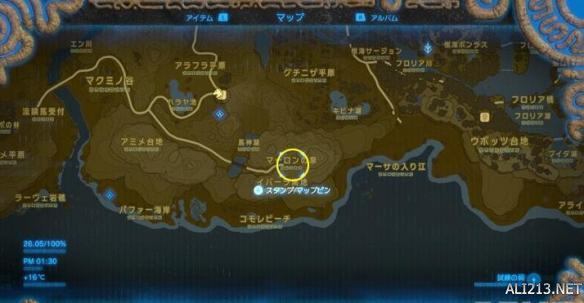
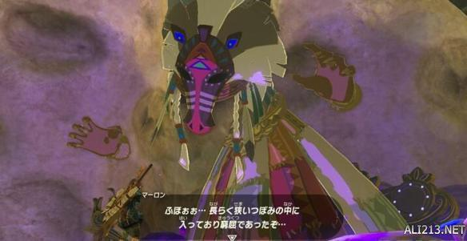

塞尔达传说荒野之息游戏中马死掉了是可以复活的，那么马匹复活位置在哪里？很多玩家不知道怎么复活，下面给大家带来了塞尔达传说荒野之息马匹复活方法解析，一起来看下吧。
马匹复活方法解析

复活马的泉水的位置在费洛涅地区、高原马宿东南边的“马龙之泉”，如上图。

马龙和大妖精一样被困在花蕾中，支付1000卢比就能复活。如果你有一匹马死亡的话，第一次可以免费为你复活。但之后如果有马匹死亡的话，会要求你支付“精力萝卜(ガッツニンジン)”，同时她还会告诉你马匹死亡的原因。